싸바이디! 그분의 이름을 찬양합니다! 절대 샬롬하세요!
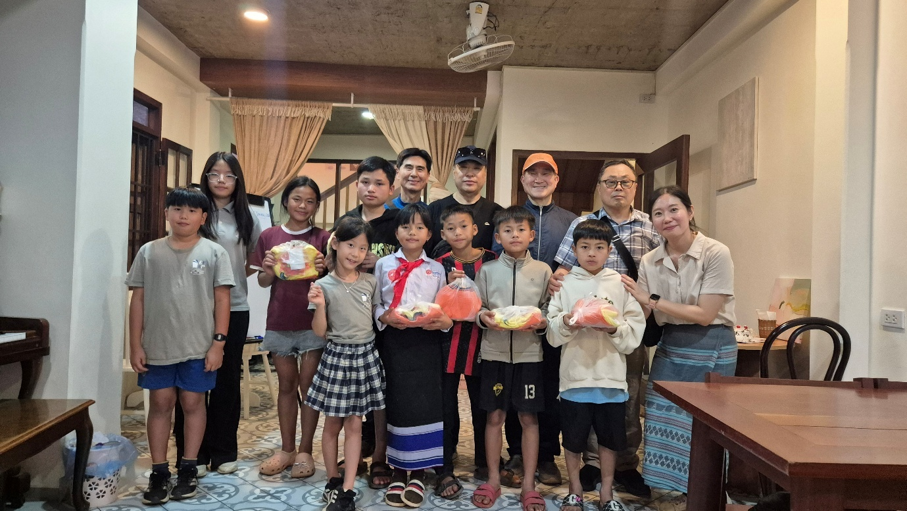
저희는 1월 14일 안전하게 귀임하여 7년차 사역을 기쁘게 시작합니다. 7년차 사역도 아프지 않고 기쁘게 감사하며 행복하게 사역할 수 있도록 함께 두손 모아주세요! 유방암 수술 후 쉬어야 함에도 불구하고 루앙파방의 박은지 선생님은 오늘도 그분의 사역을 감당하고 있습니다. 사역지에서의 마음의 아픔과 육체의 아픔은 경험하지 못한 사람은 이해하기 어려운 일입니다. 저희는 그들을 위로하고 사역을 지원하기 위해 김해·부산에서 오신 귀한 4명의 천사와 함께 루앙파방에 다녀왔습니다. 그분의 역사는 빈틈없으시고 확실하심을 다시 한번 경험합니다. DSI(인도차이나 꿈자람터)는 그분에게 받은 사랑을 다음세대에게 꿈과 희망으로 전하겠습니다. 금번 방문하신 사업하시는 한 분의 말씀을 새겨 봅니다. 밑없는 독과 같은 사역이 아닌 흘러 넘쳐 축복의 통로가 되게 하는 사역을 위해 마음을 닿고 힘을 다하고 뜻을 다하여 그분의 사랑을 전하겠습니다. 사랑하는 동역자 여러분, 이를 위해 함께 두손 모아주세요!
Ministry
『루앙파방의 꿈나무 육성 사역』
김해·창원·부산에서 온 천사들!
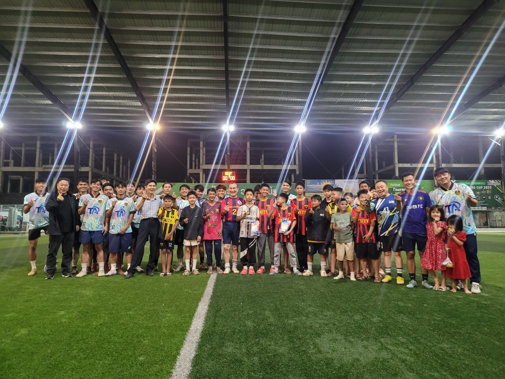
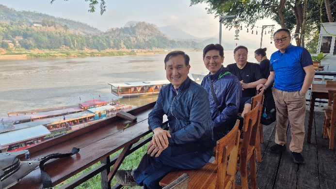
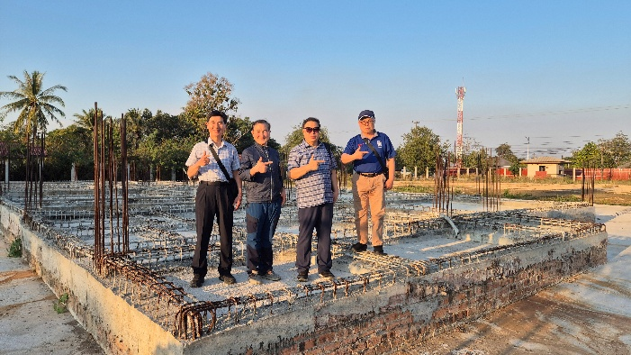
비엔티안과 루앙파방 4박 5일 일정으로, 지난달 이주민 사역 때 뵈었던 4명의 천사들이 라오스에 방문하셨습니다. 가족 모임을 구성하여 라오스를 섬기기 위하여 비전트립을 오셨습니다. 라오스 상황과 DSI 사역을 소개받으시고 사역현장을 방문하고 함께 두손모았습니다. 먼저 젊은 라오스 선생님들을 찾아 위로하고 격려해주셨습니다. DSI FC의 젊은 루앙파방팀과의 경기에도 한치의 물러섬 없이 멋진 경기력을 보일 만큼 능력과 체력을 가지신 귀한 분들이셨습니다. 건강한 그분의 사역에 관심이 많으셨고 귀한 그분의 사랑을 전할 방법을 열심히 찾아가 보셨습니다. 한국의 많은 공동체가 건강한 사역, 건강한 사역장을 위해 함께 노력할 수 있도록 두손 모아주세요!
Ministry
『지역섬김, 이웃사랑』
라오스도 추워요! 10도입니다!
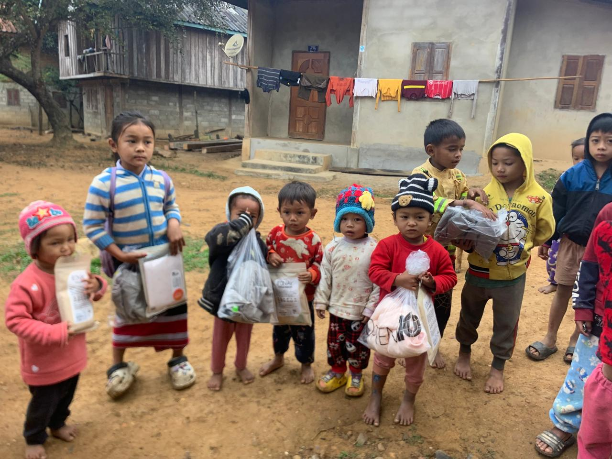
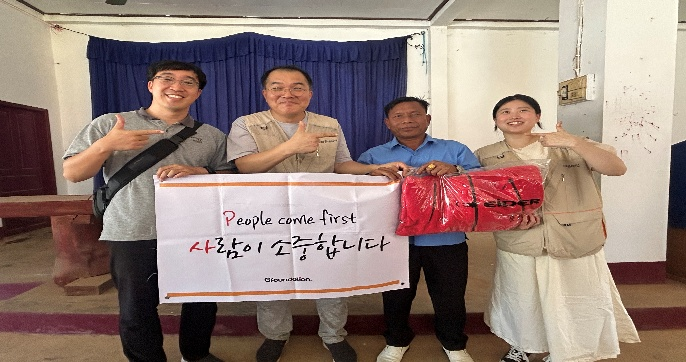
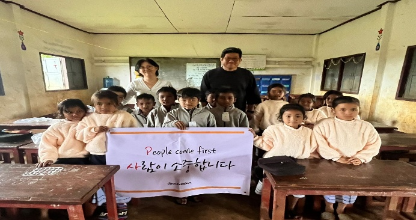
15도 이하의 라오스 날씨는 갑작스런 심장마비와 병이 발생할 수 있습니다. DSI는 IAK, G 파운데이션과 협업하여 어려움을 겪고 있는 이웃에게 찾아갑니다. 그분의 사랑은 그들에게 따뜻함과 평안함을 느끼게도 합니다. 그분의 사랑은 무한한 능력을 가지고 계십니다. 그분의 가장 큰 두 번째 계명은 이웃 사랑입니다. 그분의 계명을 지키는 사람이 그분의 백성입니다. 그분의 계명을 지키는 자가 그분을 사랑하는 사람입니다. 그분은 아프고 병들고 도움이 필요한 이웃에게 다가가 도움을 주시기 원합니다. 어려움에 대한 준비가 되어있지 못한 우리의 이웃에게 그분의 사랑을 가지고 다가가는 저희 사역이 멈추지 않도록 동역자 여러분! 함께 두 손 모아주세요!
Ministry
『기드온 300 용사 청년 리더양성사역』
일하자! 공부하자!
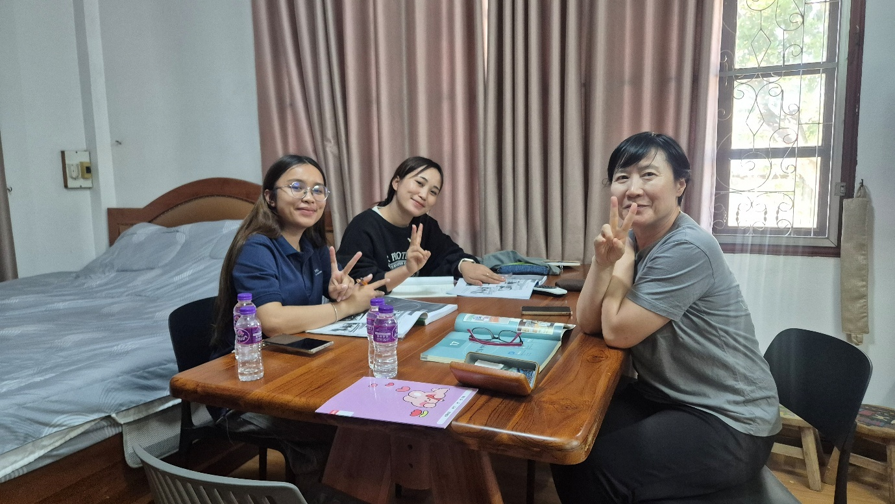
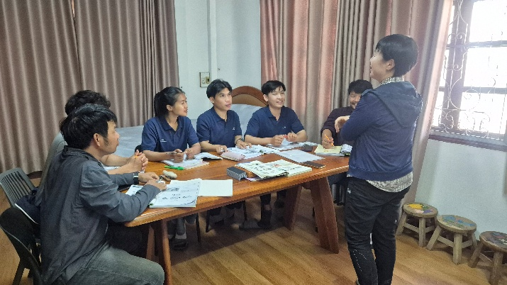
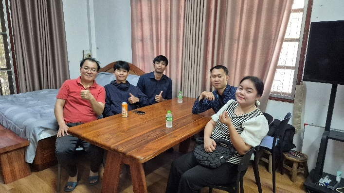
당당한 그분의 청년리더를 양성한다는 것은 영적인 부분과 일상적인 삶에 있어서 모범이 되어야만 합니다. 2027년까지 청년 리더 300명을 양성하는 것이 저희 사역의 방향입니다. 어려운 라오스 상황을 변화시키고 이끌어갈 DSI 청년리더들은 그분의 말씀을 온전히 알고 지키는 것이며 일상 삶 속에서도 당당해야만 합니다. 끊임없이 배우고 익혀서 각자의 분야에서 전문가가 되고 선한 영향력을 발휘해야만 합니다. 자신의 시간과 물질을 드려 아름다운 그분의 사역을 할 수 있게 청년 리더들을 양성하고 있습니다. 한국어를 열심히 공부하고 영어를 배우며, 필요한 기술과 전문 지식을 배웁니다. 이들이 열심을 다하여 배우는 목적은 그분에게 받은 이런 사랑을 나눌 수 있기 위해서입니다. 사랑하는 동역자 여러분, 함께 두손 모아주세요! DSI 청년리더들이 어려운 상황에 놓여있는 라오스를 그분의 사랑으로 변화시킬 수 있길 소망합니다.
Ministry
『원더풀스토리, 성경캠프』
100만 명의 어린이에게 복된 소식을…
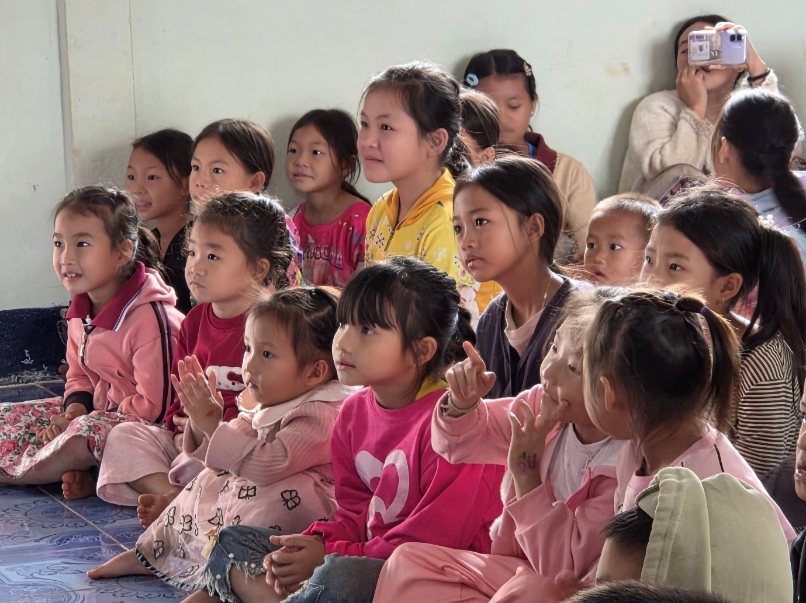
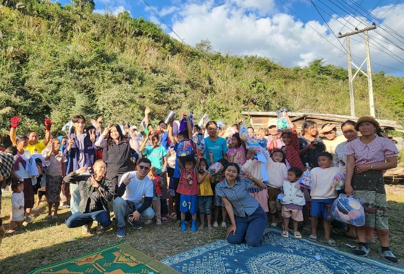
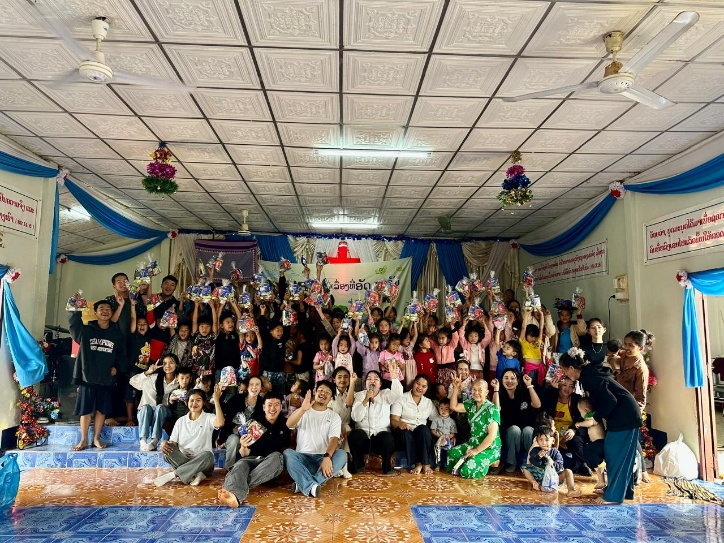
이야기 중심의 말씀 캠프는 매월 1회씩 시골마을을 방문하여 선생님과 청년리더들이 구약과 신약 말씀 72가지 이야기로 복된 소식을 전합니다. 나살라ㄱ회에서 50명 예상을 하고 캠프를 준비했는데 아이들이 80명 넘게 모였습니다. 게임, 연극, 활동, 퀴즈 등을 통하여 오랫동안 말씀을 기억할 수 있도록 캠프가 진행됩니다. 역시 가장 행복한 시간은 저희가 준비한 점심시간과 선물을 증정하는 시간입니다. 다음세대에게 그분의 사랑을 통하여 꿈과 희망을 전하는 복된 캠프가 되어지길 소망합니다. 하루빨리 전국 곳곳을 다니며 복된 말씀을 전하는 캠프가 확장될 수 있도록 두 손 모아주세요!
Ministry
『또 다른 귀한 사역들』
그분의 사랑을 전합니다
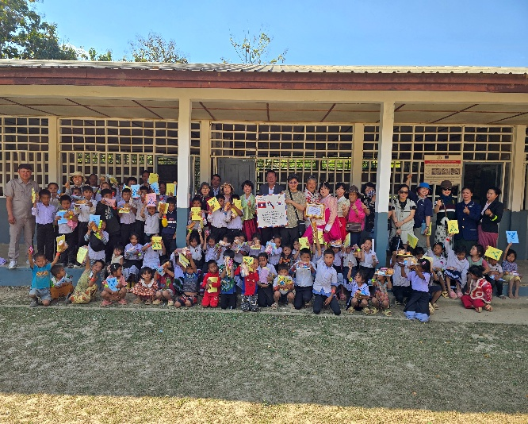
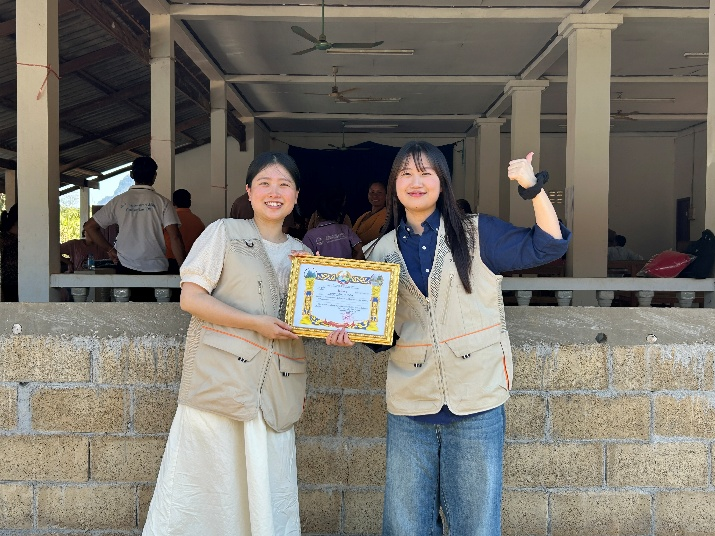
인천에서 오신 단기팀과 함께 루앙파방에 우물을 통하여 그분의 사랑을 전하였습니다. 한수원 퇴직자 모임에서 온 4분과 함께 깽바양 공립초등학교에 장학금과 아이들 학용품으로 그분의 사랑을 나누었습니다. 또한 G Foundation의 팀장님과 간사님과 함께 므앙푸앙이라는 시골마을에 201벌의 귀한 옷을 그분의 사랑하심으로 나누었습니다. DSI가 그분이 기뻐하시는 사역을 통하여 귀한 축복의 통로가 되어 지속적으로 그분의 사랑을 풍성하게 나눌 수 있도록 두손 모아주세요! 모두들 행복하세요!
🙏 함께 두 손 모아주세요
이번 달, 이렇게 기도해 주세요
- 1
DSI를 통하여 당당한 크리스천 리더가 2026년 말까지 100명이 양성되도록
- 2
라오스 지방에서 고생하는 선생님들과 굳건하고 귀한 네트워크를 만들 수 있도록
- 3
7년차 사역을 아프지 않고 기쁘고 감사하며 행복하게 사역할 수 있도록
- 4
인도차이나 꿈자람터 — 예배공간, 병원, 학교, 운동장, 기숙사의 완공을 위하여
- 5
라오스 땅에 그분의 권세 안에 있는 기업 KINGDOM COMPANY 설립을 위하여
- 6
한국 내 라오스 공동체가 건강하고 하나님 보시기에 합당한 사역이 되도록
함께 두 손 모아주세요!!!
Support
『인도차이나반도 C-Leader 양성 프로젝트 후원계좌』
예금주 : GMS 하경호 / 문규화